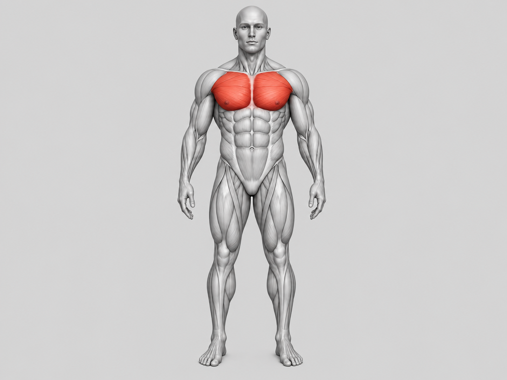
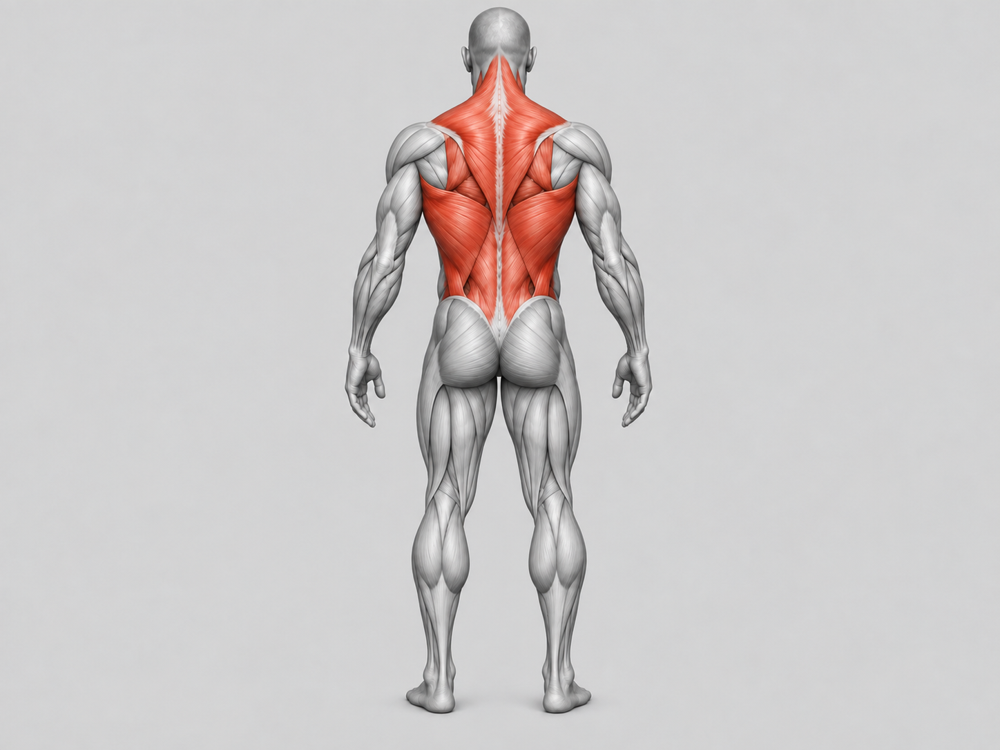
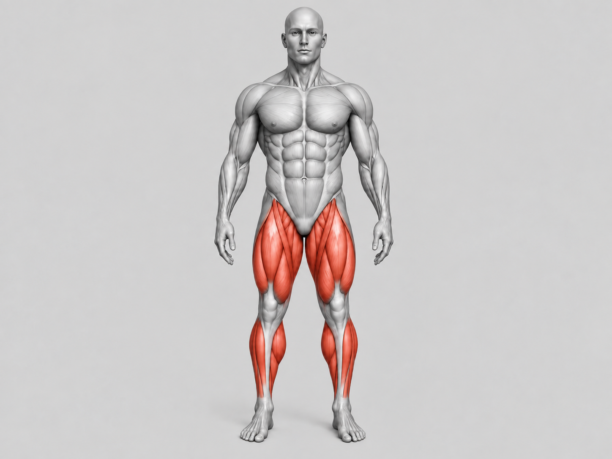
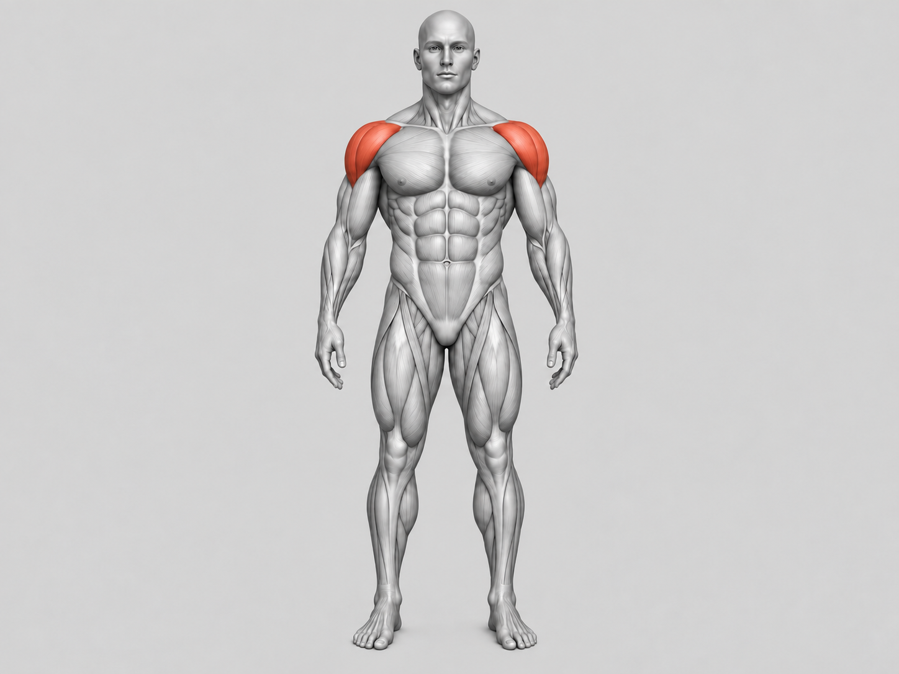
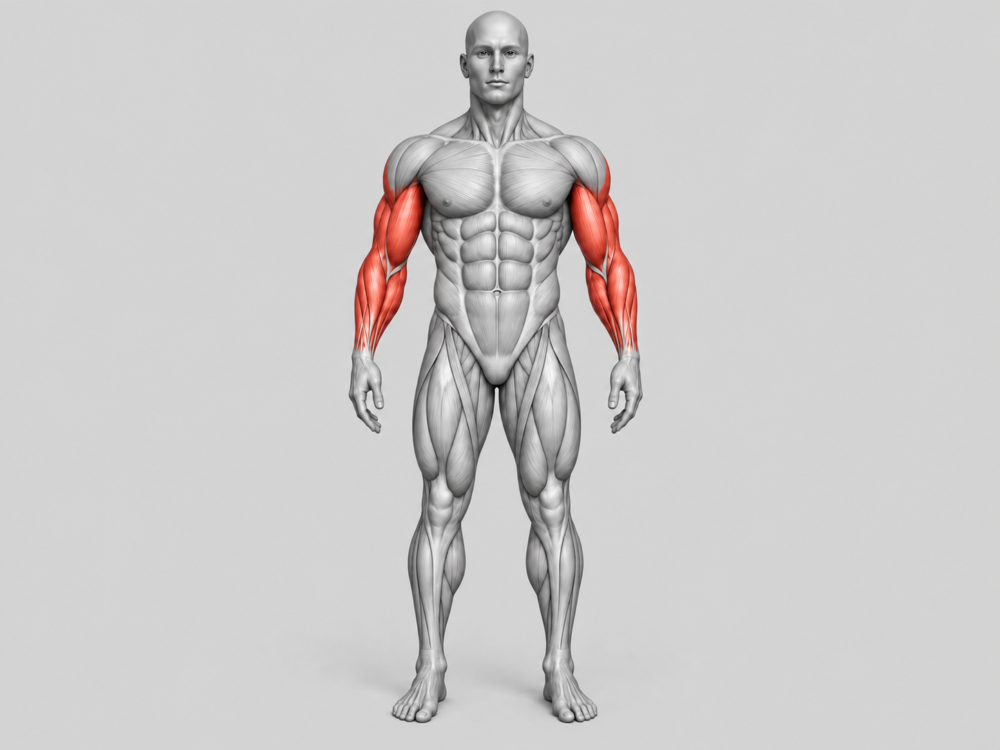
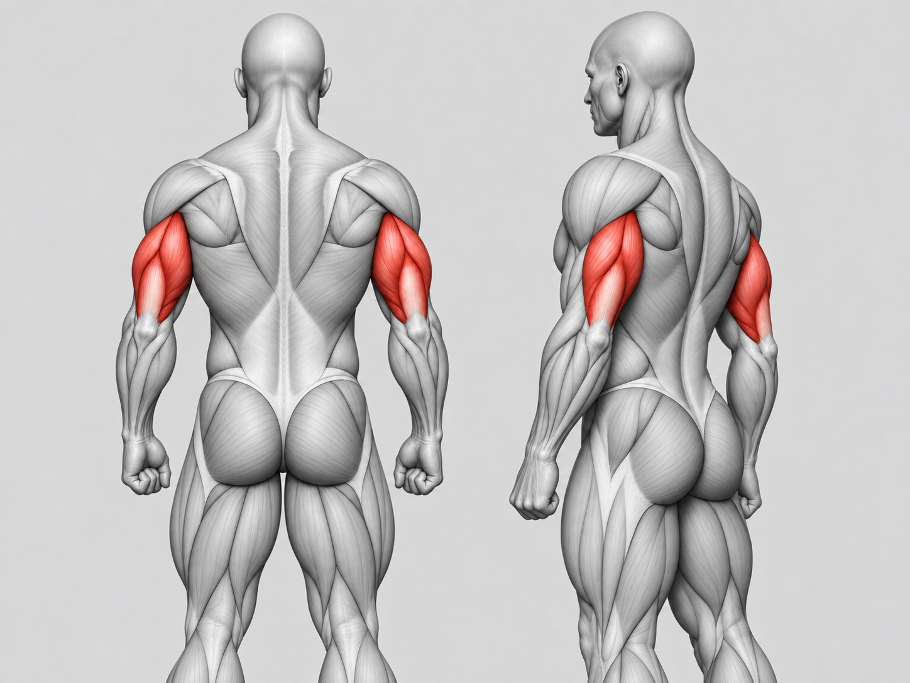
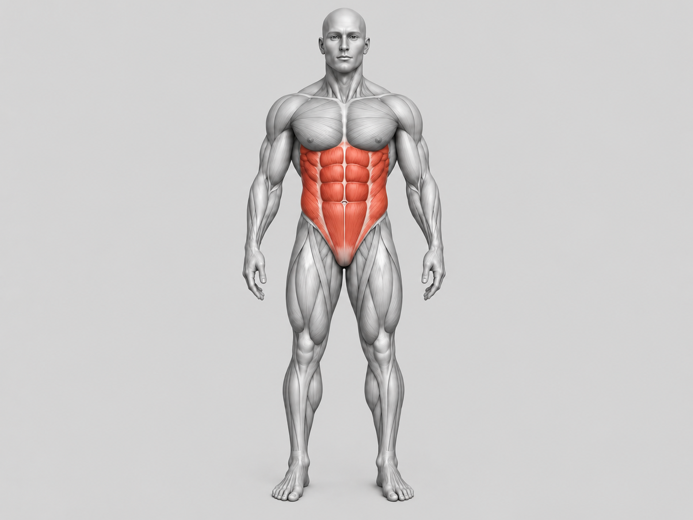

Peito

Uma forma simples de visualizar os principais grupos musculares e organizar sua rotina de treino.
Escolha a região que deseja trabalhar.







Registre seus treinos e acompanhe sua evolução ao longo do tempo.